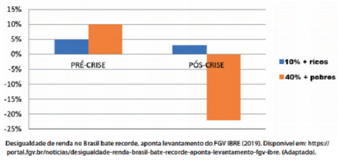
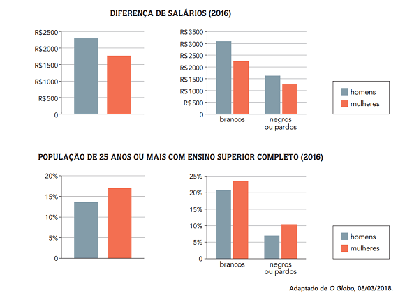

Conteúdo: População economicamente ativa; setores de atividades econômicas; desemprego;
Objetivo: Compreender a distribuição da população economicamente ativa no território brasileiro e suas desigualdades socioespaciais correspondentes.
Questão 01
(UEMA 2020) O gráfico a seguir mostra a variação acumulada real da renda média nos contextos pré-crise e pós-crise econômica no Brasil, conforme dois grupos sociais distintos: os 10% mais ricos e os 40% mais pobres.

Os dados apresentados na pesquisa realizada pelo Instituto Brasileiro de Economia da Fundação Getúlio Vargas (FGV IBRE), em 2019, revelam que
a) os dois grupos empobreceram significativamente no período pós-crise.
b) a rentabilidade dos mais pobres no período pré-crise acentuou a injustiça social.
c) a desigualdade socioeconômica entre os dois grupos aumentou no período pós-crise.
d) a equidade entre ricos e pobres se efetivou no período pré-crise.
e) a lucratividade dos mais ricos no período pós-crise equilibrou a estratificação social.
Comentário:
O gráfico apresenta a variação acumulada real da renda média. Nas barras pré-crise, a população mais pobre possui um saldo positivo. No entanto, no pós-crise, o saldo é negativo. Nesse sentido, podemos concluir que a desigualdade social aumentou.
Questão 02
(UEMA 2020) A carteira de trabalho é o documento em que fica registrado o contrato de trabalho no Brasil. Analise a charge a seguir publicada recentemente sobre as novas relações de trabalho.
A cena da charge apresenta uma crítica à
a) terceirização do trabalho que garante autonomia aos trabalhadores contratados.
b) reestruturação produtiva que transfere para os sindicatos os custos com os trabalhadores.
c) informalidade do emprego que aumenta a insegurança do trabalhador frente ao capital.
d) individualidade do trabalho, com a qual o trabalhador desenvolve uma atividade específica.
e) concentração do processo produtivo em um único espaço, o que possibilita um rígido controle das tarefas.
a) Incorreto. A terceirização não garante a autonomia do trabalhador.
b) Incorreto. A charge não aponta para uma reestruturação produtiva.
c) Correto. Cada vez mais aumenta o número de trabalhadores informais (sem carteira assinada) no nosso país.
d) Incorreto. A charge não critica a individualidade do trabalho.
e) Incorreto. A charge não critica a concentração do processo produtivo.
Questão 03
(ENEM 2020) A pirâmide de formato triangular da década de 1970 foi dando lugar a uma pirâmide mais retangular de base mais estreita e topo mais largo. Em 1991, a população de 0 a 14 anos correspondia a 34,7% da população brasileira, tendo passado para 24,1% em 2010. A população em idade ativa, entre 15 e 59 anos, por sua vez, passou de 58,0% a 65,1% no mesmo período.
IBGE. Brasil em números. Rio de Janeiro: IBGE, 2014.
As alterações no perfil demográfico brasileiro, descritas no texto, trouxeram como consequência socioeconômica o(a)
a) aumento da mortalidade infantil.
b) crescimento das desigualdades regionais.
c) redução dos gastos na educação superior.
d) restrição no atendimento público hospitalar.
e) expansão na demanda por ocupações laborais.
Questão 04
(ESA 2019) Quando se observa a distribuição setorial da PEA (população economicamente ativa) no Brasil, percebe-se que os trabalhadores ligados ao Comércio e Serviços respondem pela maioria absoluta, na comparação com aqueles que trabalham nos outros dois setores da economia.
Esse fenômeno é conhecido como:
a) hipertrofia do terciário.
b) informalidade.
c) terceirização.
d) razão de dependência
e) desemprego tecnológico.
Questão 05
(UFU 2018) A População Economicamente Ativa (PEA) brasileira está ficando mais velha e o número de jovens que ingressam na População em Idade Ativa (PIA) é cada vez menor, segundo dados da Pesquisa Nacional por Amostra de Domicílios (PNAD) do IBGE. Trata-se de movimento natural da economia, mas que trará consequências importantes para empresas.
Disponível em: Acesso em: 22 de mar, 2017.
Esse cenário tende a proporcionar a médio e a longo prazo
a) um menor crescimento da disponibilidade de mão de obra e a diminuição da oferta de profissionais capacitados.
b) um achatamento salarial em todas as etapas de produção quando a mão de obra será gradativamente substituída pelas máquinas.
c) uma redução nos custos da previdência social, nos gastos com saúde e, principalmente, com a educação.
d) uma diminuição nos investimentos para capacitação profissional devido à redução da concorrência entre trabalhadores que procuram emprego.
Questão 06
(UERJ 2019 Os levantamentos feitos pelo Instituto Brasileiro de Geografia e Estatística indicam diferenças quanto à remuneração e ao acesso ao ensino superior de homens e mulheres.

A partir dos dados, observa-se a permanência da seguinte prática:
a) exclusão política
b) discriminação racial
c) homogeneização cultural
d) hierarquização econômica
Questão 07
(FPP 2017) Leia atentamente o excerto e observe as questões a seguir.
O crescimento da escolaridade feminina tem se consolidado nos últimos anos e se manifestado nos diversos setores da atividade econômica. Um exemplo é o comércio, onde, em 2003, as mulheres com 11 anos ou mais de estudo, ocupadas nessa atividade, totalizavam 51,5%, enquanto os homens com a mesma característica alcançavam 38,4%. Na construção, esses percentuais se diferenciavam ainda mais: 55,4% de mulheres e 15,8% de homens. Em 2011, os percentuais de participação alcançados por elas foram superiores aos dos homens em praticamente todos os grupamentos de atividade.
A exceção ocorreu na indústria, onde o crescimento deles foi maior em 1,7 ponto percentual. A superioridade da presença feminina com nível superior também foi verificada nos grupamentos de atividade, com destaque para a construção (atividade majoritariamente desenvolvida pelo sexo masculino). No entanto, apesar do predomínio de homens, a proporção de mulheres que possuíam nível superior foi bem mais elevada que a deles: 28,6% das mulheres e 4,7% dos homens ocupados na construção em 2011. A administração pública e os serviços prestados a empresas foram os grupamentos que apresentaram as maiores proporções de mulheres, tanto com 11 anos ou mais de estudo, quanto com nível superior.
Fonte: IBGE, Diretoria de Pesquisas, Coordenação de Trabalho e Rendimento, Pesquisa Mensal de Emprego 2003-2011.
I. As mulheres apresentam, gradativamente, um crescimento no quesito escolaridade.
II. As mulheres se destacam pela escolaridade em diversos setores da economia brasileira.
III. Mulheres com nível superior dominam todos os segmentos de atividades majoritariamente masculinos.
IV. Na indústria predomina a mão de obra masculina, mesmo assim, os homens com 11 anos ou mais de estudo são em menor número.
V. O número maior de homens nas atividades de construção resulta em uma porcentagem maior de profissionais com nível superior, em relação às mulheres.
Assinale a opção CORRETA.
a) Somente as questões I, II, e III estão corretas.
b) Somente as questões I e II estão corretas.
c) Somente as questões III e IV e V estão corretas.
d) Somente as questões II e IV estão corretas.
e) Somente as questões III e V estão corretas.
Questão 08
(Enem 2017) A diversidade de atividades relacionadas ao setor terciário reforça a tendência mais geral de desindustrialização de muitos dos países desenvolvidos sem que estes, contudo, percam o comando da economia. Essa mudança implica nova divisão internacional do trabalho, que não é mais apoiada na clara segmentação setorial das atividades econômicas.
RIO, G. A. P. A espacialidade da economia. In: CASTRO, I. E.; GOMES, P. C. C.; CORRÊA, R. L. (Org.). Olhares geográficos: modos de ver e viver o espaço. Rio de Janeiro: Bertrand Brasil, 2012 (adaptado).
Nesse contexto, o fenômeno descrito tem como um de seus resultados a
a) saturação do setor secundário.
b) ampliação dos direitos laborais.
c) bipolarização do poder geopolítico.
d) consolidação do domínio tecnológico.
e) primarização das exportações globais.
Alternativa D. A consolidação do domínio de tecnologias produtivas, em especial nos setores primário e secundário da economia, gerou maior pressão sobre os trabalhadores empregados nessas atividades. Dessa maneira, a partir da substituição de mão de obra braçal por máquinas e equipamentos, boa parte dos trabalhadores desses setores tradicionais migrou para as atividades econômicas terciárias.
Questão 09
(FATEC 2015) A distribuição da População Economicamente Ativa (PEA) por setores de atividades econômicas (primário, secundário e terciário) pode fornecer dados interessantes sobre o desenvolvimento de um país. A distribuição não é uniforme e imutável, ela se altera, em função das especificidades econômicas e sociais de cada país.
No Brasil, a distribuição da PEA por setores de atividades mostra que
a) a maior parte da PEA encontra-se no setor primário, evidenciando o caráter agroexportador da economia brasileira.
b) a PEA alocada no setor secundário ultrapassa os 50% do seu total, indicando que o Brasil é, efetivamente, um país industrializado.
c) o setor terciário, por concentrar atividades extrativistas e de mineração, vem se destacando como principal setor empregador do Brasil.
d) o setor terciário é onde se encontra a maior parte da PEA, revelando a crescente importância desse setor na economia brasileira.
e) o rápido processo de urbanização ocorrido a partir da segunda metade do século XX tornou o setor secundário o maior empregador brasileiro.
Questão 10
(EsPCEx2011) Sobre o mercado de trabalho e a estrutura ocupacional no Brasil, podemos afirmar que:
I- na distribuição setorial da População Economicamente Ativa por regiões, o Sudeste e o Centro-Oeste apresentam os maiores percentuais no setor primário. A importância regional da agropecuária ajuda a explicar esse fato.
II- o setor secundário é o mais heterogêneo de todos em função da grande diversidade de suas atividades. Nele, a construção civil é a atividade que apresenta níveis gerais de qualificação da mão de obra mais elevados.
III- entre as principais atividades do setor terciário, podemos destacar os serviços, o comércio e a administração pública. Este setor reúne trabalhadores de níveis de qualificação e salário muito diversos.
IV- de uma maneira geral, os setores de trabalho urbano pagam salários mais elevados. A maior qualificação da força de trabalho empregada na indústria, no comércio e nos serviços é um importante fator para que isto ocorra.
Assinale a alternativa que apresenta todas as afirmativas corretas:
a) I e II
b) I, II e III
c) I e IV
d) II e III
e) III e IV